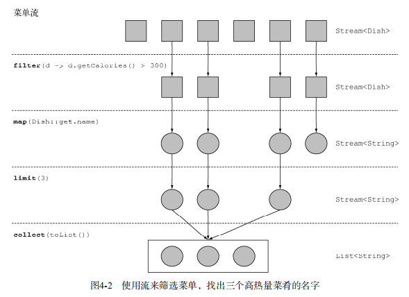
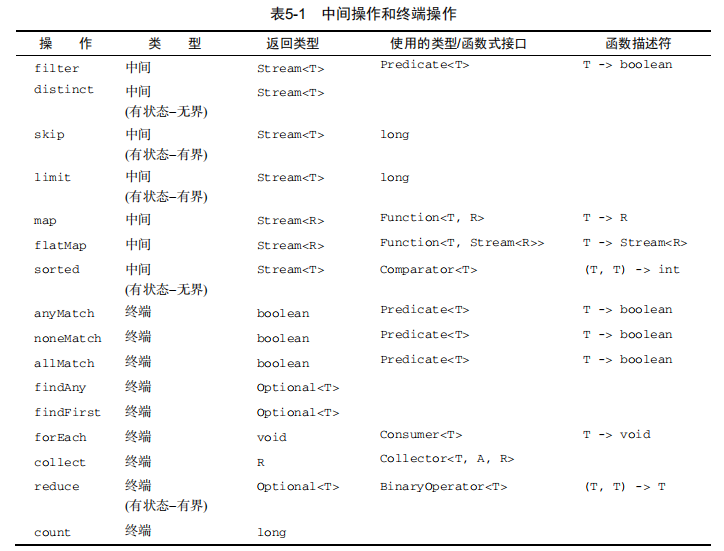

流是什么
流是Java API的新成员，它允许你以声明性方式处理数据集合（通过查询语句来表达，而不是临时编写一个实现）。就现在来说，你可以把它们看成遍历数据集的高级迭代器。
此外，流还可以透明的并行处理，你无需写任何多线程代码了！
在继续介绍之前，先定义一会要使用到的集合对象。
List<Dish> menu = Arrays.asList( |
Dish对象的声明如下：
class Dish { |
流简介
简短的定义就是“从支持数据处理操作的源生成的元素序列”
- 元素序列——就像集合一样，流也提供了一个接口，可以访问特定元素类型的一组有序值。因为集合是数据结构，所以它的主要目的是以特定的时间/空间复杂度存储和访问元素（如ArrayList 与 LinkedList）。但流的目的在于表达计算。集合讲的是数据，流讲的是计算。我们会在后面详细解 释这个思想。
- 源——流会使用一个提供数据的源，如集合、数组或输入/输出资源。 请注意，从有序集合生成流时会保留原有的顺序。由列表生成的流，其元素顺序与列表一致。
- 数据处理操作——流的数据处理功能支持类似于数据库的操作，以及函数式编程语言中 的常用操作，如filter、map、reduce、find、match、sort等。流操作可以顺序执行，也可并行执行。
此外，流操作有两个重要的特点。
- 流水线——很多流操作本身会返回一个流，这样多个操作就可以链接起来，形成一个大的流水线。这让一些优化成为可能，如延迟和短路。流水线的操作可以看作对数据源进行数据库式查询。
- 内部迭代——与使用迭代器显式迭代的集合不同，流的迭代操作是在背后进行的。
举例：筛选菜单中卡路里高于300的三个菜名
List<String> res = menu.stream() |
在本例中，我们先是对menu调用stream方法，由菜单得到一个流。数据源是菜单列表， 它给流提供一个元素序列。接下来，对流应用一系列数据处理操作：filter、map、limit 和collect。除了collect之外，所有这些操作都会返回另一个流，这样它们就可以接成一条流水线，于是就可以看作对源的一个查询。最后，collect操作开始处理流水线，并返回结果（它和别的操作不一样，因为它返回的不是流，在这里是一个List）。在调用collect之前，没有任何结果产生，实际上根本就没有从menu里选择元素。你可以这么理解：链中的方法调用都在排队等待，直到调用collect。
过程如下：

流与集合
简单地说，集合与流之间的差异就在于什么时候进行计算。集合是一个内存中的数据结构， 它包含数据结构中目前所有的值——集合中的每个元素都得先算出来才能添加到集合中。（你可 以往集合里加东西或者删减东西，但是不管什么时候，集合中的每个元素都是放在内存里的，元素 都得先算出来才能成为集合的一部分。）
相比之下，流则是在概念上固定的数据结构（你不能添加或删除元素），其元素则是按需计 算的。
- 与集合不同，流只能遍历一次
- 集合是外部迭代，而流使用内部迭代——它帮你把迭代做了
流操作
stream定义了很多操作，分为两类：
- filter、map和limit可以连成一条流水线；
- collect触发流水线执行并关闭它；
可以连接起来的流操作称为中间操作，关闭流的操作称为终端操作。
总而言之，流的使用一般包括三件事：
- 一个数据源（如集合）来执行一个查询；
- 一个中间操作链，形成一条流的流水线；
- 一个中间操作，执行流水线，并能生成结果。
使用流
filter
Streams接口支持filter方法（你现在应该很熟悉了）。该操作会接受一个谓词（一个返回 boolean的函数）作为参数，并返回一个包括所有符合谓词的元素的流。
// 筛选所有素菜 |
distinct
和数据库的distinct关键词很像，它会返回一个元素各异（即无重复的，根据流所生成元素的 hashCode和equals方法实现）的流。
limit
和数据库的limit关键词很像，该方法会返回一个不超过给定长度的流。
skip
流还支持skip(n)方法，返回一个扔掉了前n个元素的流。
☆map
对流中每一个元素应用函数。流支持map方法，这个方法接收一个函数作为参数，这个函数会被应用到流中的每个元素，并将其映 成一个新的元素，（创建新版本而不是修改原始流）例如，下面的代码把方法引用Dish::getName传给了map方法， 来提取流中菜肴的名称：
List<String> dishNames = menu.stream() |
flatMap
当给定单词列表["Hello","World"]，想要返回各不相同的字符列表["H","e","l", "o","W","r","d"]。如果你使用map(word -> word.split(""))，你会发现这根本不起作用，这个方法的问题在于，传递给map方法的Lambda（word -> word.split(“”)）为每个单词返回了一个String[]（String 列表）。因此，map返回的流实际上是Stream
此时你可以使用flatMap。使用flatMap方法的效果是，各个数组并不是分别映射成一个流，而映射成流的内容。所 有使用map(Arrays::stream)时生成的单个流都被合并起来，即扁平化为一个流。
List<String> uniqueCharacters = words.stream() |
查找与匹配
另一个常见的数据处理操作是看看数据集中的某些元素是否匹配一个给定的属性， Stream API通过allMatch、anyMatch、noneMatch、findFirst和findAny方法提供了这样的工具。
anyMatch
anyMatch方法可以解决 “流中是否有一个元素能匹配给定的谓词”。比如，你可以用它来看看菜单里面是否有素食可选择：
menu.stream().anyMatch(Dish::isVegetarian) |
anyMatch方法返回一个boolean，因此是一个终端操作
allMatch
allMatch方法会检查流中的元素是否都能匹配给定的谓词。
noneMatch
noneMatch它可以确保流中没有任何元素与给定的谓词匹配。
findany
findAny方法将返回当前流中的任意元素，它返回的是Optional<T>
findFirst
findFirst查找第一个元素
归约
reduce
使用reduce，你可以像下面这样对流中所有的元素求和：
int sum = numbers.stream().reduce(0, (a, b) -> a + b); |
reduce接受两个参数：
- 一个初始值，这里是0；
- 一个BinaryOperator来将两个元素结合起来产生一个新值，这里我们用的是 lambda (a, b) -> a + b。
你也很容易把所有的元素相乘，只需要将另一个Lambda：(a, b) -> a * b传递给reduce 操作就可以了：
int product = numbers.stream().reduce(1, (a, b) -> a * b); |
reduce还有一个重载的变体，它不接受初始值，但是会返回一个Optional对象：
Optional<Integer> sum = numbers.stream().reduce((a, b) -> (a + b)); |
为什么它返回一个Optional呢？考虑流中没有任何元素的情况。reduce操作无 法返回其和，因为它没有初始值。这就是为什么结果被包裹在一个Optional对象里，以表明和可能不存在。
map和reduce的连接通常称为map-reduce模式，因Google用它来进行网络搜索而出名， 因为它很容易并行化。
中间操作和终端操作表

数值流
我们在前面看到了可以使用reduce方法计算流中元素的总和。例如，你可以像下面这样计 算菜单的热量：
int calories = menu.stream() |
这段代码的问题是，它有一个暗含的装箱成本。每个Integer都必须拆箱成一个原始类型， 再进行求和。但是Stream为我们提供了更好的解决办法
原始类型流特化
Java 8引入了三个原始类型特化流接口来解决这个问题：IntStream、DoubleStream和 LongStream，分别将流中的元素特化为int、long和double，从而避免了暗含的装箱成本。
映射到数值流
将流转换为特化版本的常用方法是mapToInt、mapToDouble和mapToLong。这些方法和前 面说的map方法的工作方式一样，只是它们返回的是一个特化流，而不是Stream。
你可以像下面这样用mapToInt对menu中的卡路里求和：
int calories = menu.stream() |
这里，mapToInt会从每道菜中提取热量（用一个Integer表示），并返回一个IntStream （而不是一个Stream）。然后你就可以调用IntStream接口中定义的sum方法，对卡 路里求和了！请注意，如果流是空的，sum默认返回0。IntStream还支持其他的方便方法，如 max、min、average等。
转换回对象流
同样，一旦有了数值流，你可能会想把它转换回非特化流。例如，IntStream上的操作只能 产生原始整数： IntStream 的 map 操作接受的 Lambda 必须接受 int 并返回 int （一个IntUnaryOperator）。但是你可能想要生成另一类值，比如Dish。为此，你需要访问Stream 接口中定义的那些更广义的操作。要把原始流转换成一般流（每个int都会装箱成一个 Integer），可以使用boxed方法
数值范围
假设你想要生成1和100之间的所有数值， Java 8引入了两个可以用于IntStream和LongStream的静态方法，帮助生成这种范围： range和rangeClosed。这两个方法都是第一个参数接受起始值，第二个参数接受结束值。但 range是不包含结束值的，而rangeClosed则包含结束值。
// 这里的范围是[1,100] 结果为50个 |
应用：勾股数
/* |
构建流
由值创建流
你可以使用静态方法Stream.of，通过显式值创建一个流。它可以接受任意数量的参数。
Stream<String> stream = Stream.of("Java 8 ", "Lambdas ", "In ", "Action"); |
你可以使用empty得到一个空流，如下所示：
Stream<String> emptyStream = Stream.empty(); |
数组创建流
你可以使用静态方法Arrays.stream从数组创建一个流。它接受一个数组作为参数。例如， 你可以将一个原始类型int的数组转换成一个IntStream，如下所示：
int[] numbers = {2, 3, 5, 7, 11, 13}; |
由文件生成流
Java中用于处理文件等I/O操作的NIO API（非阻塞I/O）已更新，以便利用Stream API。 java.nio.file.Files中的很多静态方法都会返回一个流。
例如，一个很有用的方法是Files.lines，它会返回一个由指定文件中的各行构成的字符串流。使用你迄今所学的内容， 你可以用这个方法看看一个文件中有多少各不相同的词：
long uniqueWords = 0; |
由函数生成无限流
Stream API提供了两个静态方法来从函数生成流：Stream.iterate和Stream.generate。 这两个操作可以创建所谓的无限流：不像从固定集合创建的流那样有固定大小的流。由iterate 和generate产生的流会用给定的函数按需创建值，因此可以无穷无尽地计算下去！一般来说， 应该使用limit(n)来对这种流加以限制
迭代
我们先来看一个iterate的简单例子，然后再解释：
Stream.iterate(0, n -> n + 2) |
iterate方法接受一个初始值（在这里是0），还有一个依次应用在每个产生的新值上的 Lambda（UnaryOperator类型）。这里，我们使用Lambda n -> n + 2，返回的是前一个元 素加上2
生成
与iterate方法类似，generate方法也可让你按需生成一个无限流。但generate不是依次 对每个新生成的值应用函数的。它接受一个Supplier类型的Lambda提供新的值。我们先来 看一个简单的用法：
Stream.generate(Math::random) |
这段代码将生成一个流，其中有五个0到1之间的随机双精度数。例如，运行一次得到了下面 的结果：
0.9410810294106129 |
Math.Random静态方法被用作新值生成器。
详略。
参考资料
- 《Java8 实战》
- 《java8实战》学习笔记